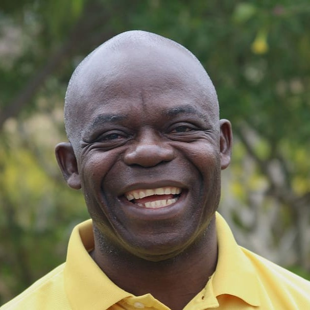

¿Quienes somos?
¡Bienvenidos a FaunAR! Somos una organización sin fines de lucro que trabaja a favor de la preservación de la fauna silvestre de toda la Argentina a través del activismo político y social, a la vez que proveemos educación gratuita y confiable acerca de nuestro ecosistema.
Artículos Recientes
Revisa nuestro catálogo completo de artículos y ensayos ¡gratis!